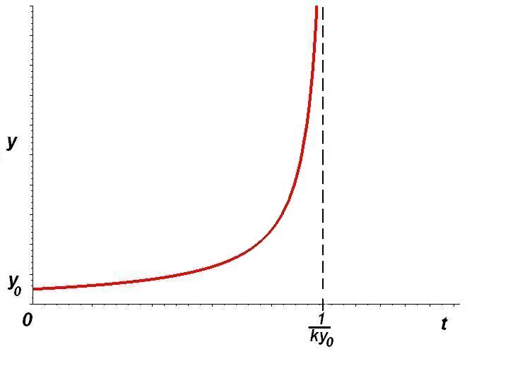

Уравнение вида \begin{equation}\label{5} y' = f(x)g(y), \tag{5} \end{equation}
где функция, стоящая в правой части, есть произведение функции, зависящей только от \(x\), на функцию, зависящую только от \(y\), называется \(\textbf {уравнением с разделяющимися переменными.}\) \[\Gamma : \hspace{1cm} a < x < b, \hspace{1cm} c < y < d \]
Если при некотором \(\overline{y} \in (c, d)\) выполняется \(g\left(\overline{y} \right) = 0\), то функция \(y \equiv \overline{y}\) является решением уравнения (\ref{5}), в чем легко убедиться непосредственной подстановкой.
В дальнейшем будем считать, что \(g\left(y \right) \neq 0\), \(y \in (c, d)\).
Запишем уравнение (\ref{5}) в виде
\[\frac{dy}{dx} = f(x)g(y).\]
Пусть \(y = \varphi (x) - \)решение этого уравнения на некотором промежутке \((\alpha, \beta) \subset (a, b) \) и \(c<\)\(\varphi (x)<\)\(d\), тогда выполняется тождество \[\frac{d(\varphi (x))}{dx} = f(x)g(\varphi(x)).\]
Поскольку мы предположили, что \(g\left(y \right) \neq 0\) на \((c, d)\) и \(c<\)\(\varphi (x)<\)\(d\), то \[\frac{d(\varphi (x))}{g(\varphi (x))} = f(x)dx, \hspace{0.5cm} x \in (\alpha, \beta)\]
Если дифференциалы равны, то их неопределенные интегралы могут отличаться лишь на константу: \begin{equation}\label{6} \int \frac{d(\varphi (x))}{g(\varphi (x))} = \int f(x)dx + C. \tag{6} \end{equation}
Далее при замене переменной в неопределенном интеграле по формуле \(y = \varphi (x)\) получим: \[\int \frac{d(\varphi (x))}{g(\varphi (x))} = \int \frac{d(y)}{g(y)} = G(y) = G(\varphi(x)) =\] \[= \int f(x)dx + C = F(x) + C,\]
где \(G(y) - \) одна из первообразных функции \(\frac{1}{g(y)},\) a \(F(x) -\) первообразная функции \(f(x).\)
Тем самым, функция \(y = \varphi (x)\) удовлетворяет уравнению: \begin{equation}\label{7} G(y) = F(x) + C \tag{7} \end{equation} при подходящем значении проивольной постоянной.
Уравнение \(G(y) = F(x) + C (7)\) имеет вид \(H(x, y ,C) = 0.\) Оно не содержит ни производных, ни дифференциалов и при фиксированном \(С\) определяет \(y\) как неявную функцию от \(x\).
Уравнение \(H(x, y ,C) = 0,\) задающее общее решение в неявной форме, называют \(\textbf {общим интегралом.}\) При конкретном значении \(C\) соотношение \(H(x, y ,C) = 0\) называют \(\textbf {частным интегралом.}\)
1. Пусть \((x_{0}, y_{0}) \in Г\) и \(g(y_{0}) \neq 0.\) Определим постоянную \(\overline{C} = G(y_{0}) - F(x_{0}).\) Почему соотношение \(G(y) = F(x) + \overline{C}\) определяет явно функцию \(y(x)\) в окрестности точки \((x_{0}, y_{0})?\)
2. Почему эта функция \(y(x)\) является решением уравнения \(y' = f(x)g(y)?\)
1. Записываем производную как отношение дифференциалов: \[\frac{dy}{dx} = f(x)g(y).\]
2. Разделяем переменные \(\frac{d(y)}{g(y)} = f(x)dx\) при условии \(g(y) \neq 0.\)
3. Навешиваем интегралы \(\int \frac{d(y)}{g(y)} = \int f(x)dx + C,\) получаем общий интеграл.
4. Если \(g(\overline{y}) = 0,\) находим решения \(y \equiv \overline{y}.\)
Решить уравнение \(y' = \frac{y}{x}.\)
\(\textbf {Решение:}\)
Запишем производную как отношение дифференциалов: \(\frac{dy}{dx} = \frac{y}{x}.\)
Разделяя переменные, получаем \[\frac{dy}{y} = \frac{dx}{x}, y \neq 0.\]
\(\int \frac{dy}{y} = \int \frac{dx}{x} + C_{1}.\)
\(ln|y| = ln|x| + lnC_{2},\) где \(C_{1} = lnC_{2}, (C_{2} > 0).\)
Находим \(|y| = C_{2}|x|\), что эквивалентно уравнению \(y = ±C_{2}x.\)
Или \(y = Cx, C \neq 0.\)
\(y \equiv 0\) - решение уравнения, входит в семейство \(y = Cx\) при \(C = 0.\)
Общее решение \(y = Cx, C \in R.\)
Уравнение взрыва. Физико-химические задачи: скорость реакции пропорциональна концентрации обоих реагентов: \[y' = ky^{2}, \hspace{0.5cm} k>0.\]
\(\textbf {Решение:}\)
\(\frac{dy}{dt} = ky^{2},\) \(\frac{dy}{y^{2}} = kdt,\) \(y \neq 0,\) \(-\frac{1}{y} = kt + C,\) \(y \equiv 0.\)
Решим задачу Коши с начальным условием \(y(0) = y_{0} \neq 0:\) \[C = - \frac{1}{y_{0}},\] \[y = \frac{1}{k}\frac{1}{\frac{1}{ky_{0} - t}}.\]
Количество вещества становится бесконечным за конечное время: интегральная кривая решения с начальным условием \(y_{0} \neq 0\) имеет вертикальную асимптоту(момент взрыва) \(t = \frac{1}{ky_{0}}\).

Уравнение \(M(x,y)dx+N(x,y)dy = 0\) называют уравнением с разделяющимися переменными, если его коэффициенты \(M\) и \(N\) представимы в виде: \[M(x,y) = M_{1}(x)·M_{2}(y); \hspace{0.5cm} N(x,y) = N_{1}(x)·N_{2}(y).\]
Рассмотрим способ решения уравнения \begin{equation}\label{8} M_{1}(x)M_{2}(y)dx + N_{1}(x)N_{2}(y)dy = 0. \tag{8} \end{equation}
Сначала предположим, что \(M_{2}(y) \neq 0\) и \(N_{1}(x) \neq 0\). Поделим обе части (\ref{8}) на произведение \(M_{2}(y)N_{1}(x):\) \[\frac{M_{1}(x)}{N_{1}(x)}dx = -\frac{N_{2}(y)}{M_{2}(y)}dy.\]
Интегрируем обе части, получим: \[\int \frac{M_{1}(x)}{N_{1}(x)}dx = - \int \frac{N_{2}(y)}{M_{2}(y)}dy + C.\]
Пусть теперь \(M_{2}(\overline{y}) = 0.\) Непосредственной подстановкой в уравнение (\ref{8}) убеждаемся, что функция \(y \equiv \overline{y}\) является решением (дифференциал функции \(y \equiv \overline{y}\) равен 0). Аналогично, когда искомой является функция \(x\), \(x \equiv \overline{x}\) будет решением уравнения (\ref{8}), если \(N_{1}(\overline{x}) = 0.\)
\((y^{2} - 1)dx+2xydy = 0.\) Это уравнение с разделяющимися переменными.
\(\textbf {Решение:}\)
Считая \(x \neq 0\) и \(y^{2} \neq 1\), разделяем переменные и интегрируем \[\frac{dx}{x} = -\frac{2ydy}{y^{2} - 1}; \hspace{0.5cm}\int \frac{dx}{x} = - \int \frac{2ydy}{y^{2} - 1} + C_{1}.\]
Вычисляя интегралы, получаем \[ln|x|+ ln|y^{2} - 1| = lnC_{2}, \hspace{0.5cm}x(y^{2} - 1) = C.\]
Кроме этого, в случае \(y = y(x)\) есть решения \(y = 1, y = -1\), (если \(x = x(y)\), то \(x = 0\) – решение).